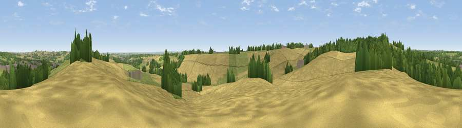

Viewpoint near Calverton
#24089 in England · top 29% of its area beats it · near CalvertonThe view, rendered

A 360° render of this exact spot computed from the terrain model, tree cover and land cover — summer colours, afternoon light, calibrated against photographs of famous viewpoints. Real trees, hedges and buildings will differ in detail.
The panorama
Grey silhouette: terrain skyline in each direction (720 bearings, Earth curvature and refraction included). Dashed green: skyline with trees (+15 m) and buildings (+8 m) as obstacles. Blue strip: how far the ground is visible on each bearing.
Where the view opens
Wedge length = distance to the farthest visible ground on that bearing (vegetation-aware). Rings at 10, 25 and 50 km.
What fills the view
55% cropland · 25% grassland · 16% woodland · 4% built-up
Angular shares of the visible panorama (visual magnitude), not map area. Landscape diversity 0.47 (0–1 Shannon).
Key numbers
More beautiful places nearby
The staircase of upgrades: each row has a higher view potential than everything closer. Driving times are estimates from straight-line distance, calibrated against real road routing — check an actual route before setting out.
| Place | Direction | Drive | Score |
|---|---|---|---|
| Viewpoint near Calverton | ENE · 0 km | ~2 min | 56.9 |
| Viewpoint near Arnold | SW · 1 km | ~4 min | 64.1 |
| No Man's Lane | SW · 18 km | ~31 min | 65.8 |
| Burstheart Hill [Thoresby Colliery] | N · 20 km | ~34 min | 69.3 |
| Viewpoint near Belvoir | SE · 26 km | ~42 min | 70.8 |
| Crich Stand | WNW · 27 km | ~43 min | 73.0 |
| Alport Height | W · 30 km | ~47 min | 73.9 |
| Viewpoint near Woodhouse Eaves | SSW · 35 km | ~53 min | 77.7 |
53.02790, -1.09901 · source: screening · position refined by local search. Computed location — check access rights before visiting.